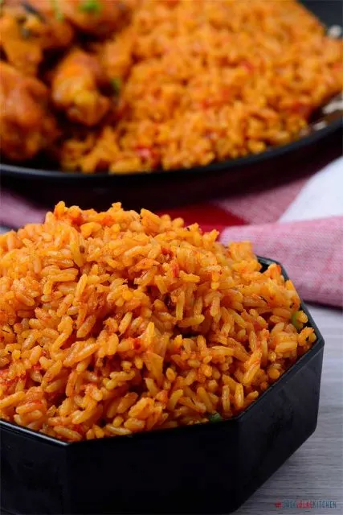

Jollof Rice

Nigerian Jollof Rice or Jellof rice is a rich and incredibly tasty west African one-pot Meal. It is a very versatile dish, and it is usually made from scratch using Rice, Tomatoes, Pimento peppers, Tomato paste, Scotch bonnet, Onions, Salt, and other spices.
Ingridients for preparing Jollof Rice
- Rice
- Tomatoes tin or fresh
- Curry Powder
- Nutmeg
- Red Pepper
- Onions
- Vegetable Oil
- Already boiled meat
- Crayfish
Steps in preparing Jollof Rice
- Add your pepper, Tomatoes(if fresh) into a blender
- Blend to paste
- Add the rice into a boiling pot of water, boil for 10mins and sieve
- Dry pot in fire and add Vegetable Oil and allow to heat
- Slice Onion bulb and pour into Oil
- Add blended paste
- Stir until dry
- Add seasoning, crayfish, meat water, and spices plus salt
- Pour your perboiled rice intoo the pot and stir
- Add water to satisfaction, hot water
- Cook until water completely dries out